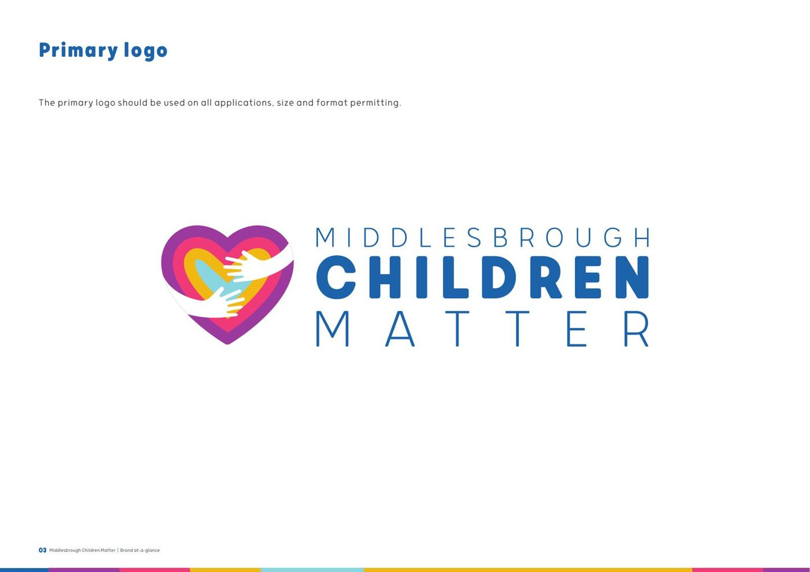

Middlesbrough Council: a vision built with young people, after special measures
Middlesbrough Council was in special measures following an inadequate Ofsted judgement, and needed more than a plan. It needed a vision the whole service, and the young people it serves, could actually recognise themselves in.


The starting point
In 2020, following an inadequate Ofsted judgement, Middlesbrough Council needed a vision for children’s services that staff and young people could genuinely own, not one written for them and handed down.
What we did
- BrandMiddlesbrough Children MatterA name, mission, vision and values, co-created with young people and staff rather than written for them
- Corporate parentingSix guiding principlesCo-produced for the corporate parenting strategy, alongside a project manager, sponsor and operational lead
- ParticipationA rebuilt participation offerThe Participation Team rebranded and relaunched, and the MCM Young People’s Advisory Group established
- Leaving careA revised offerThe leaving care offer revised and relaunched for the young people who use it
- FilmSix films with young peopleMade to carry the vision in young people’s own words
- DigitalA website and a year of contentThe Middlesbrough Children Matter website launched, with a 12-month social media calendar to keep the vision visible after launch
How we worked
Story
The vision came from what staff and young people said special measures actually felt like, not from a corporate template.
Theory
Corporate parenting principles that connect a council’s statutory duty to what a child in care actually experiences day to day.
Tools
A brand, a website, a content calendar and a young people’s advisory group, so the vision had a way to keep going after we left.
What changed
Middlesbrough Children Matter gave the council a shared vision built from 28 training and co-design sessions and 22 coaching sessions, reaching around 300 staff, young people and partners. The Participation Team was rebranded and relaunched alongside a new Young People’s Advisory Group, the leaving care offer was revised, and six films carried the vision in young people’s own words.

See the work
